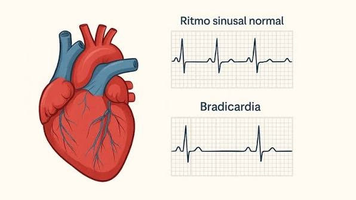

Bradicardia
Descripción
La bradicardia es la frecuencia cardíaca baja. El corazón de los adultos en reposo suele latir entre 60 y 100 veces por minuto. Si tienes bradicardia, el corazón late menos de 60 veces por minuto. La bradicardia puede ser un problema grave si la frecuencia cardíaca es muy lenta y el corazón no puede bombear suficiente sangre rica en oxígeno al cuerpo.
Aunque, una frecuencia cardíaca baja no siempre es un problema. Por ejemplo, una frecuencia cardíaca en reposo de entre 40 y 60 latidos por minuto es común en algunas personas, en particular los adultos jóvenes sanos y los atletas entrenados. También es bastante común durante el sueño. Si la bradicardia es grave, puede ser necesario un marcapasos para ayudar al corazón a latir a un ritmo adecuado.
Causas
Las causas de la bradicardia pueden ser las siguientes:
- Daño del tejido cardíaco relacionado con el envejecimiento
- Daño de los tejidos cardíacos por una enfermedad cardíaca o un ataque cardíaco
- Alguna afección cardíaca de nacimiento, que se conoce como defecto cardíaco congénito
- Inflamación del tejido cardíaco, que se conoce como miocarditis
- Complicación después de una cirugía del corazón
- Glándula tiroides hipoactiva, que se conoce como hipotiroidismo
- Cambios en el nivel de minerales corporales como el potasio o el calcio
- Un trastorno del sueño que se conoce como apnea obstructiva del sueño
- Enfermedad inflamatoria, como la fiebre reumática o el lupus
- Ciertos medicamentos, como sedantes, opiáceos y algunos utilizados para tratar enfermedades cardíacas y mentales
Síntomas
Los síntomas comunes de bradicardia incluyen:
- Palpitaciones
- Desmayos (síncope) o sensación de desmayo
- Mareo
- Cansancio
- Debilidad
- Confusión
- Dificultad para respirar
- Dolor en el pecho
- Opresión en el pecho o dificultad para respirar durante la actividad física
Pruebas y exámenes
Su proveedor de atención médica le preguntará sobre su historial clínico y los medicamentos que toma. Su proveedor le realizará un examen físico y auscultará su corazón con un estetoscopio para detectar soplos cardíacos u otros sonidos cardíacos anormales. Se medirán su presión arterial y el pulso.
Su proveedor podría solicitar las siguientes pruebas:
- Electrocardiograma (ECG)
- Registro con monitor Holter de 24 horas o monitor de eventos
Otras pruebas que podrían realizarse incluyen:
- Ecocardiograma
- Angiografía coronaria
- Estudio electrofisiológico (EEF)
- Prueba de esfuerzo
- Tomografía computarizada del corazón
- Resonancia magnética
- Pruebas de sangre para detectar afecciones subyacentes como hipotiroidismo o desequilibrio electrolítico
Tratamiento
El tratamiento depende de la causa de la bradicardia y de los síntomas que usted presente. Las personas con síntomas leves o sin síntomas podrían no necesitar tratamiento.
Su tratamiento podría incluir:
- Reducir la dosis o cambiar el medicamento que pueda estar causando su frecuencia cardíaca lenta
- Tratar cualquier afección subyacente
- Usar medicamentos (como atropina, isoproterenol, dopamina y epinefrina) para aumentar su frecuencia cardíaca en situaciones de emergencia
- Implantar un marcapasos
- Utilizar un procedimiento para detener las señales nerviosas del corazón (ablación neural cardíaca) que pueden estar haciendo que el marcapasos natural del corazón sea más lento
Expectativas
El pronóstico depende de:
- El tipo de bradicardia que padece
- Su función cardíaca
- La causa subyacente
El pronóstico para las personas con bradicardia es bueno si la afección se diagnostica y trata precozmente.
Imágenes de la enfermedad
